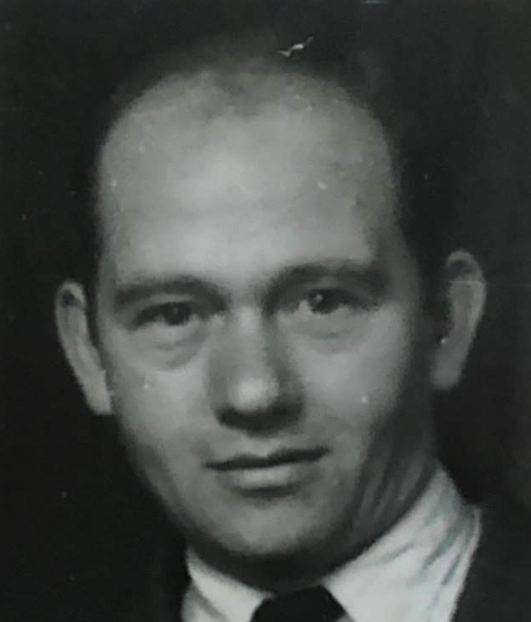

Home
Yitzchok (Irving, Ignatz) Davidowitz 
b. August 10, 1912 | 27 Av, 5672
Birth location: Chust
Father: Moshe
Mother:
Wife: Sarah Davidowitz nee Herskowitz
d. Jan 6, 2006 | 6 Teves, 5766
Buried: Mount Carmel, Los Angeles